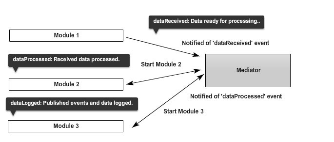

讲modiator之前，我们先来举个例子，机场飞行控制系统，也就是传说中的塔台，具有绝对的权利，他可以控制任何一架飞机的起飞和降落时间以及地方，而飞机和飞机之前不允许通信，也就是说塔台是机场的核心，mediator就相当于这个塔台。
//mediator就是用在程序里有多个模块，而你又不想让各个模块有依赖的话，那通过mediator模式可以达到集中控制的目的。实际场景中也是，mediator封装了很多不想干的模块，让他们通过mediator联系在一起，同时也松耦合他们，使得他们之间必须通过mediator才能通信。
//那mediator模式的优点是什么？那就是解耦，如果你之前对观察者模式比较了解的话，那理解下面的mediator图就相对简单多了，下图是一个high level的mediator模式图：

想想一下，各模块是发布者，mediator既是发布者又是订阅者。
Module 1向Mediator广播一个实际，说需要做某事
Mediator捕获消息以后，立即启动处理该消息需要使用的Module 2，Module 2处理结束以后返回信息给Mediator
与此同时，Mediator也启动了Module 3，当接受Module 2 返回消息的时候自动记录日志到Module 3里
可以看到，各模块之间并没有通信，另外Mediator也可以实现监控各模块状态的功能，例如如果Module 3出错了，Mediator可以暂时只想其它模块，然后重启Module 3，然后继续执行。
回顾一下，可以看到，Mediator的优点是：松耦合的模块由同一的Mediator来控制，模块只需要广播和监听事件就可以了，而模块之间不需要直接联系，另外，一次信息的处理可以使用多个模块，也方便我们以后统一的添加新的模块到现有的控制逻辑里。
确定是：由于所有的模块直接都不能直接通信，所有相对来说，性能方面可能会有少许下降，但是我认为这是值得的。
我们根据上面的讲解来一个简单的Demo：
var mediator = (function(){
var subscribe = function(channel, fn){
if (!mediator.channels[channel]) mediator.channels[channel] = [];
mediator.channels[channel].push({ context: this, callback: fn });
return this;
},
publish = function(channel){
if (!mediator.channels[channel]) return false;
var args = Array.prototype.slice.call(arguments, 1);
for (var i = 0, l = mediator.channels[channel].length; i < l; i++) {
var subscription = mediator.channels[channel][i];
subscription.callback.apply(subscription.context, args);
}
return this;
};
return {
channels: {},
publish: publish,
subscribe: subscribe,
installTo: function(obj){
obj.subscribe = subscribe;
obj.publish = publish;
}
};
}());
然后有2个模块分别调用：
//Pub/sub on a centralized mediator
mediator.name = "tim";
mediator.subscribe('nameChange', function(arg){
console.log(this.name);
this.name = arg;
console.log(this.name);
});
mediator.publish('nameChange', 'david'); //tim, david
//Pub/sub via third party mediator
var obj = { name: 'sam' };
mediator.installTo(obj);
obj.subscribe('nameChange', function(arg){
console.log(this.name);
this.name = arg;
console.log(this.name);
});
obj.publish('nameChange', 'john'); //sam, john
应用Facade: 应用程序核心的抽象
一个facade是作为应用程序核心的一个抽象来工作的，在mediator和模块之间负责通信，各个模块只能通过这个facade来和程序核心进行通信。作为抽象的职责是确保任何时候都能为这些模块提供一个始终如一的接口（consistent interface），和sendbox controller的角色比较类似。所有的模块组件通过它和mediator通信，所以facade需要是可靠的，可信赖的，同时作为为模块提供接口的功能，facade还需要扮演另外一个角色，那就是安全控制，也就是决定程序的哪个部分可以被一个模块访问，模块组件只能调用他们自己的方法，并且不能访问任何未授权的内容。例如，一个模块可能广播dataValidationCompletedWriteToDB，这里的安全检查需要确保该模块拥有数据库的写权限。
总之，mediator只有在facade授权检测以后才能进行信息处理。
应用Mediator：应用程序的核心
Mediator是作为应用程序核心的角色来工作的，我们简单地来说一下他的职责。最核心的工作就是管理模块的生命周期（lifecycle），当这个核心扑捉到任何信息进来的时候，他需要判断程序如何来处理——也就是说决定启动或停止哪一个或者一些模块。当一个模块开始启动的时候，它应该能否自动执行，而不需要应用程序核心来决定是否该执行（比如，是否要在DOM ready的时候才能执行），所以说需要模块自身需要去判定。
你可能还有问题，就是一个模块在什么情况下才会停止。当程序探测到一个模块失败了，或者是出错了，程序需要做决定来防止继续执行该模块里的方法，以便这个组件可以重新启动，目的主要是提高用户体验。
另外，该核心应该可以动态添加或者删除模块，而不影响其他任何功能。常见的例子是，一个模块在页面加载初期是不可用，但是用户操作以后，需要动态加载这个模块然后执行，就像Gmail里的chat聊天功能一样，从性能优化的目的来看，应该是很好理解的吧。
异常错误处理，也是由应用程序核心来处理的，另外各模块在广播信息的时候，也广播任何错误到该核心里，以便程序核心可以根据情况去停止/重启这些模块。这也是松耦合架构一个很重要的部分，我们不需要手工改变任何模块，通过mediator使用发布/订阅就可以来做到这个。